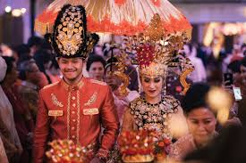

Sejarah dan Makna
Gorontalo memiliki kekayaan budaya dan tradisi yang telah diwariskan secara turun-temurun. Budaya ini mencerminkan nilai-nilai kehidupan masyarakat yang penuh dengan adat istiadat serta kearifan lokal.

Ciri Khas Budaya Gorontalo
- Adanya sistem adat yang dikenal dengan "Pohala'a" (sistem kekerabatan).
- Memiliki pakaian adat khas, seperti "Biliu" untuk wanita dan "Payunga" untuk pria.
- Tarian tradisional seperti Tari Polopalo dan Tari Saronde.
- Musik tradisional seperti Polopalo dan Gambus Gorontalo.
Tradisi Unik Gorontalo
Beberapa tradisi khas Gorontalo yang masih lestari hingga kini:
- Upacara Perkawinan: Dikenal dengan prosesi adat yang sakral dan penuh makna.
- Tradisi Mopotilolo: Upacara penyambutan tamu kehormatan dengan tarian dan musik tradisional.
- Tumbilotohe: Tradisi menyalakan lampu minyak menjelang akhir Ramadan sebagai simbol penerangan hati.
- Manganda: Tradisi syukuran atas hasil panen yang melimpah.
Keunikan Budaya Gorontalo
Beberapa keunikan budaya Gorontalo yang membedakannya dari daerah lain:
- Memiliki filosofi adat "Adati hula-hula'a to sara'a, sara'a hula-hula'a to Kuru'ani" yang berarti adat bersendikan syariat, dan syariat bersendikan Al-Qur'an.
- Bahasa Gorontalo yang memiliki dialek khas dan masih digunakan dalam kehidupan sehari-hari.
- Kuliner khas seperti Binte Biluhuta, Ilabulo, dan Duduli yang memiliki cita rasa unik.